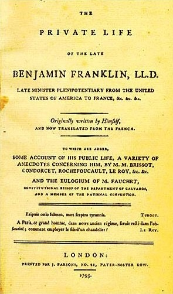

14. 民主的前与后：平等如何重塑流动的自我
大家好，我是杨照。
我们继续来为大家介绍托克维尔他的《论美国的民主》的下卷。
切断民主与革命的因果
前面跟大家讲到了，这个下卷里有一种非常特别的“社会学式的视野”。那这社会学式的视野，在下卷又连接到上卷开宗明义就所说的“平等”的概念予以展开。在人类历史上，从未出现过这么强烈的平等的要求和平等的追求。一个以平等为最高原则，也是最高价值的实质运作的民主社会，这是美国最大的特色。而在下卷当中，托克维尔他就设定了接下来要分析和平等相关的两个重要的问题。
第一个问题是：平等和民主需要什么样的社会基础吗？作为一个政治制度，民主无法单纯地只是在权力安排上、只在政治领域当中获得解决，因为民主牵涉到众人，牵涉到这个群体的所有人，不像君主制度就只是和少数分享权力的人有关。所以民主的范围就是整个社会，也就因为这样，民主需要有特定的社会基础。
再来看第二个问题，这是更广泛的问题。倒过来问：在政治上采取了民主制度，又会产生什么样的社会效果，因而创造出什么样特别的社会吗？
托克维尔的分析仍然依循着美国和法国的对照来进行。他正面挑战了在法国被视为理所当然的一项看法，那就是认为民主是来自于革命，要用革命的手段先打破了原先不民主的政治架构，才有办法腾出空间用民主来代换。如果没有革命，就不会有民主。
托克维尔认为，这是单纯从政治的角度片面的看法，中间有着逻辑因果的混淆。革命是打破旧体制的手段，破坏、取消了旧体制，然后改成民主制度。这种时间上的先后顺序，不应该被混淆为革命和民主之间直接的因果关系。革命先于民主，但革命不是民主的原因，不是民主的起因。
托克维尔将在法国普遍流行的“民主来自革命”的看法彻底地颠倒过来。他主张：美国之所以有民主，正因为美国没有发生革命。我们在前面就提到了，按照托克维尔他对法国大革命的研究，他并不认为美国有过革命，美国并没有经历法国式的那种革命的破坏。那美国有的是什么？那只是对英国争取独立的一场战争而已。
法国大革命带来了从上到下彻底的大翻搅，用暴力手段破坏了所有的秩序。在大革命之下，一切都被无情的巨轮压过、碾碎了，法国社会经历了一连串的质疑、破坏，社会被迫进入到一种疯狂状态，就不只是取消了所有的共识，也取消了所有能够去进行对话的基础。
美国并不是在这种大破坏、大骚动之后产生了民主。美国立国的过程当中，基本上只质疑、只推翻了一件事，那就是作为英国殖民地这项事实。在对抗英国的过程当中，美国人自身的内在理念、信仰非但没有被动摇，没有被破坏，反而更加强化，在面对共同敌人产生的团结意识当中强化了，而且也是靠强化了的这种共同的理念、共同的信仰，才得以集中力量赢取了这场战争的胜利。
美国人在民主制度当中，他们拥有个人自由，每个人都有权利在乡镇会议（town meeting）当中提出自己的主张，别人不能逼迫他/她住嘴，更不能逼迫他/她改变主意。但托克维尔他又提醒：这样的自由其实是有限的。美国人表面的自由背后，有着更深层、更强大的，那是共同信仰所带来的约束。民主只能够诞生在个人拥有明确而且有限自由的社会里。大革命之后的法国，什么话都能讲，什么事都能做，百无禁忌的社会反而是无法产生民主的。
民主建立了，运作稳定了，社会有越来越大的多元空间，这是一回事；单单是从起源上来看的话，那民主成立的条件，是大家要有相当程度的共同信念。基督新教是美国人当时不可能争辩、也无需争辩的，他们共同信仰、信念的基础。正因为这个社会共识的范围非常广，就有条件开放出一块有限的空间来进行民主的实验。
托克维尔是想明白地告诉法国的读者：为什么法国一直建立不起民主？那是因为法国是一个革命后的社会，也就缺乏了民主所需要的这种共识的基础。必须要大家具备共同的常识，不必在这种层次上费力气争辩，然后我们才能够在这个范围以外的某个地方，大家非常认真地、非常大胆地、甚至激烈地去讨论。在这些常识以外的领域，人们可以大不相同，互不同意，然后透过自由讨论的程序，去摸索出处理问题的方法。要能解决彼此的差异，你不能忘掉它是有一个前提，前提是背后有一定的社会共识、社会常识作为它的基础。
民主在美国并没有制造出混乱的社会。我们不可能靠民主来收拾一个原本就已经彻底脱序、失序的社会，民主需要在相对稳定的共识环境当中建立起来，这是托克维尔所主张民主需要的社会条件。
平等社会下，个人的自我想象
那换另外一个方向看，平等、民主的政治制度运作，会带来什么样的社会效果呢？
托克维尔讨论的民主社会效应非常广泛。一群人采取了这样的一种权力安排，创造了这样一套政治组织、政治制度，也就必然相应影响社会的每一个环节，让这些环节都发生了变化。一个贵族制的社会和一个民主平等的社会，不会就只是在政治权力的安排上不一样，而是所有社会生活面向都会因此而大不相同。
托克维尔他就特别提到了：一个平等、民主的社会，使得个人的自我想象变得比较宽阔。在高度结构化的社会里，有各种不同的身份限制，例如法国旧时的贵族制，或者是我们知道印度有更严格的、历史性的“种姓”制度，在那里面，人无法逃脱出生就带给他/她的身份，身份于是就是一切，而且身份划分得越细，每个人在社会上的位置越固定，因而也就无所用于自我想象了。你的一生早就已经写好、写定了，现实也就等于是你未来的全部。那你干嘛要想象？你又如何想象？你想象能想象出什么来呢？
而一个越平等的社会，其中的成员的自我可能性也就有越大的自我想象空间。在这个社会里，他/她会变成一个什么样的人，他/她要变成什么样的人，没有明显严格的框架束缚着，替他/她决定。人与人之间的关系，因而也相应是流动的。今天的关系，不保证就是明天、未来的关系。
在一个平等、民主的社会当中，必然会出现的状况是“变化”。变化的可能性和变化的事实，在每一个人的生活里都占据了非常重要的地位，每个人不得不感受到变化，不得不承认变化以及不得不去适应变化。如此一来，也就影响了在这个社会当中成员对于人的认知跟理解的模式。
在身份制，例如前面提到法国旧式的贵族制，或者是印度的种姓制，这种社会当中对人的认知跟理解，就会偏向于凸显固定不动的部分，相对轻忽会变动、可以变动的。像是在印度的种姓制度里，认识一个人，怎么认识？先弄清楚他/她是属于这四大种姓当中的其中哪一个，尤其要弄清楚，他/她的种姓位置跟你自己相比，到底他/她是比我高还是比我低？先要弄清楚这个。不同种姓的人，就必须要用不同的方式来对待，我跟他/她之间的关系也立刻就受到种姓身份的限制跟规约。最简单的一件事，我能不能跟他/她吃一顿饭，甚至我能不能从他/她的手里接过食物来吃，这都要由种姓、身份来决定，那就更不要说，我能不能跟这个人发展出朋友关系甚至情人关系了。
固定不动的身份挡在前面，我们绕不过去、没办法绕过这部分去接近、去认识这个人。整个社会上就只有极少数的人，我们有机会真正碰触到他们的个性、他们的思想、他们和别人不一样的行为风格，所以在这种社会里，也就必然养成了不自觉的习惯，让人忽视个性、忽视变化，而重视身份，强调不变的本质。这种社会里的人，倾向于信任不变的身份，却对于有所变化的因素，就带着不信任甚至是不安的态度。
然而，在一个平等、民主的社会，托克维尔提醒我们，情况是刚好相反的。平等社会的成员的认知假设是，人会不断地改变。美国社会尤其有强烈的集体信念，相信人不只是会一直改变，人会一直越变越好。既然存在着变化的可能性，那么人当然会去努力追求各方面的提升，物质的待遇、精神的待遇的提升，要有更好的生活享受，要有更高的社会地位。在一个平等、民主的社会，一个重视变动的社会，人们相信自己会不断地变好。在平等、民主的社会里，我们不会觉得自己轻易就认识了一个人，知道了、掌握了他/她跟我之间的关系，这里没有任何简单、固定的东西，可以让我抓到了，我就觉得安心，就觉得够了。
对于人的认识，我们真正需要的，不是任何当下的事实，那会是什么呢？是一直不断地去摸索，一直不断去揣测，这个人，他/她会有一些什么改变的潜力，还有我们会看到或我们会想要知道，他/她的“可完美性”，也就是他/她如何趋近更好的路径的选择。变化的可能性、变化的方向，比任何不变的性质更有助于形成我们对这个人的看法跟意见。
一个含着银汤匙出生，在富贵家庭长大的人，不会在美国社会得到尊敬。会得到尊敬的，是那种依靠自己的力量不断往上爬，不断自我提升、自我进步的人。我不知道，朋友们，你们读过富兰克林的自传吗？这是一本美国历史上最畅销、也最重要的励志经典，定义了美国人心目当中到底什么是成功。《富兰克林自传》写的就是一个自我打造（self-made）的人的故事。他不靠先天带来的好处，而是靠不懈的努力，靠坚毅的挣扎，靠他的知识，靠他的智慧，靠他的毅力跟勇气，让他可以克服所有不利的条件，把自己塑造成一个有价值的人。

1793年《本杰明·富兰克林自传》英文初版封面
在法国，人家佩服你，是看你身上拥有什么，你的财富、你的名声、你的身份、你的地位。可是在美国，你之所以值得佩服，不完全因为你拥有什么，更重要的是，你如何拥有这些特质的过程，你在过程当中付出的代价，你所经历的挣扎，还有你所付出的努力。如果没有任何的挣扎跟努力，无论你身上拥有多少，都不可能在美国这样的社会得到真诚的佩服。
所以你看，不一样的社会，在一个民主的社会，强调平等的社会，就会在社会的意识上，甚至深入到人跟人之间如何彼此看待。你要尊敬谁，你要重视什么，在这个社会里面都会形成不同的倾向。
感谢您的收听，我们下次再会。